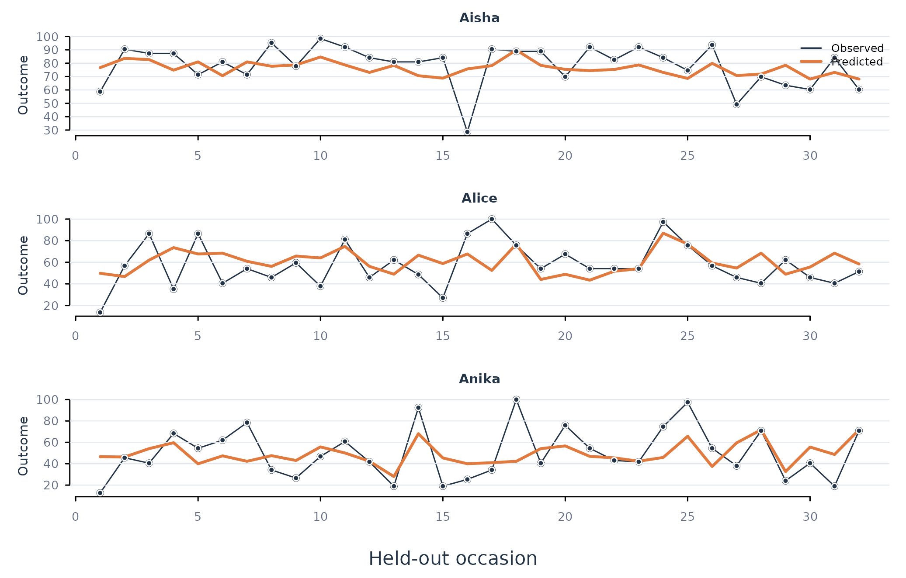

Analytic question
fit_lm() estimates a continuous outcome from one or more
predictors at pooled, subgroup, or person-specific scopes. The function
takes a long-format panel and column names for the outcome, predictors,
person, and optional time order. It returns an
idiographic_fit with tidy coefficients, held-out
predictions, performance metrics, and failures.
fit_lm() uses an ordered hold-out within each learner.
Earlier observations form the training set and the final proportion
forms the test set. The pooled model shares one coefficient vector
across learners. The individual scope fits one coefficient vector per
learner.
Fit both scopes
fit_lm() models daily effort from efficacy and
monitoring. The default scope = "both" fits pooled and
individual models using the same ordered test rows. Table 1 compares
their aggregate held-out performance.
lm_fit <- fit_lm(analysis_data, y = "effort", x = c("efficacy", "monitoring"), id = "name", time = "day", scope = "both")
metrics(lm_fit, overall = TRUE)
#> scope model estimator subject subgroup n rmse mae bias
#> 1 pooled lm native .overall .all 384 23.22627 18.97802 0.4108068
#> 2 individual lm native .overall .all 384 19.83725 15.68630 0.5814738
#> r_squared
#> 1 0.2897850
#> 2 0.4819235fit_lm() gives the individual models a lower RMSE than
the pooled model in Table 1. The individual aggregate RMSE is about
19.8, compared with 23.2 for the pooled model. The corresponding
held-out R-squared values are about 0.48 and 0.29. These figures
describe this panel and this split.
Inspect person-specific coefficients
coefs() retrieves inferential estimates without
accessing the fit’s internal list. Table 2 reports Aisha’s individual
regression.
coefs(lm_fit, scope = "individual", subject = "Aisha")
#> scope model estimator subject subgroup term estimate std_error
#> 1 individual lm native Aisha .none (Intercept) 60.8053781 4.48242570
#> 2 individual lm native Aisha .none efficacy 0.2209651 0.08212755
#> 3 individual lm native Aisha .none monitoring 0.1495086 0.06851997
#> statistic p_value
#> 1 13.565284 4.720708e-26
#> 2 2.690512 8.143071e-03
#> 3 2.181971 3.104404e-02coefs() reports positive efficacy and monitoring
coefficients for Aisha in Table 2. Each coefficient is conditional on
the other predictor. The standard errors and p-values describe
uncertainty in the training-period regression. They do not measure
held-out prediction error.
Plot held-out predictions
plot_predictions() compares observed and predicted test
values for selected learners. Figure 1 displays three individual models.
Black points and lines are observations. Orange lines are
predictions.
plot_predictions(lm_fit, scope = "individual", n_subjects = 3)
Figure 1. Held-out effort and person-specific linear-model predictions for three learners.
Figure 1 shows that prediction quality differs across learners and occasions. The aggregate advantage in Table 1 does not imply equal accuracy for every person. The trajectory plot should accompany aggregate metrics when the unit of inference is the person.
Assumptions and failure checks
fit_lm() assumes a linear conditional mean, finite
residual variance, and a training period that represents the test
period. Coefficient intervals also use the fitted linear-model sampling
assumptions. Serially correlated residuals can make those intervals too
narrow. Held-out metrics remain useful for prediction even when
coefficient inference requires a richer error model.
fit_lm() records persons with insufficient complete
training or test rows in the failure table. The function does not move
observations across person boundaries to fill a split. The optional
weights argument names a case-weight column. The
estimator = "robust" option uses MASS::rlm()
when resistance to outlying residuals is required.
When to use which
fit_lm() is appropriate for a continuous outcome and
interpretable linear coefficients. fit_glm() is appropriate
for binary, count, and other supported response families.
fit_ml() is appropriate when held-out prediction and
nonlinear algorithms are primary. fit_within_between() is
appropriate when raw predictors would mix within-person and
between-person effects.